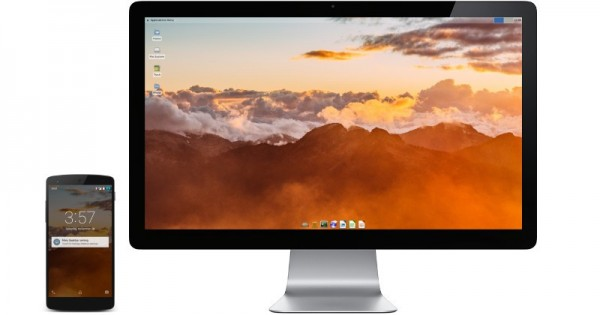

微软的 Windows 10 系统在移动设备和 PC 设备间，有个 Continuum 连续性特性，这个功能似乎也让很多非 Windows 平台的用户感兴趣。当然了，市面上其实不止 Windows 10 有这一特性，Ubuntu 的 Convergence 与此是异曲同工的。最近一群开发人员（未知名）推出了一个 Maru OS，将类似 Continumm 的特性带到了 Android 系统中。

maru-1-800x420.jpg
不过这两者还是有差异的，这里 Maru 解决方案是让一台设备同时拥有两套操作系统。微软为 Windows 10 Mobile 设计的Continumm，以及 Ubuntu 的Convergence，是一台设备运行一个操作系统，但它们在手机上就显示手机的内容，如果外接扩展到大屏幕上，又能获得类似桌面系统的体验。
而 Maru 在实现效果上也是类似的，即显示内容取决于显示在何种尺寸的屏幕上，但实际上在手机和大屏幕两种显示终端间切换，并不是简单地切换 UI，而是转换操作系统。
此种解决方案下，在手机上就显示普通的 Android 5.1 系统（而且 Maru OS 开发者宣称没有任何额外的预装垃圾应用），带Google Play Store。而将手机通过 HDMI 连接到大屏幕的时候，就会切换到另一套系统，基于 Debian GNU/Linux。对 GNU 桌面环境熟悉的用户自然会很熟悉其真实的桌面体验。
因为是系统级的切换，所以不必像 Continuum 特性那样局限于 Universal 全局应用。Linux 桌面可用的在这里也都能用。不管是文档处理，甚至类似于编程、运行 web 服务器这样的重度任务都是支持的，虽然也是要受限于手机本身的硬件配置。
据说，如 Nexus 5 这种配置的手机，骁龙800芯片、2GB RAM 内存就能够胜任某些较重的任务。至于 Maru OS 的安装，也不是在手机上装个应用这么简单，实际上跟刷个 ROM 是差不多的，而且 Maru OS 的桌面切换特性目前只支持有线 HDMI 连接。当前 Maru OS 还在 beta 测试阶段，或许未来还会有进一步的完善。
转载自：CNBETA http://www.cnbeta.com/articles/473343.htm
本文为转载，如需再次转载，请查看源站 “CNBETA” 的要求。如果我们的工作有侵犯到您的权益，请及时联系我们。
文章仅代表作者的知识和看法，如有不同观点，请楼下排队吐槽 :D
Linux.CN © 2003-2016 Linux中国 | Powered by DX | 图片存储于七牛云存储
京ICP备05083684号-1 京公网安备110105001595
服务条款 | 除特别申明外，本站原创内容版权遵循 CC-BY-NC-SA 协议规定


分享到微信朋友圈
打开微信，点击底部的“发现”，
使用“扫一扫”将网页分享至朋友圈。